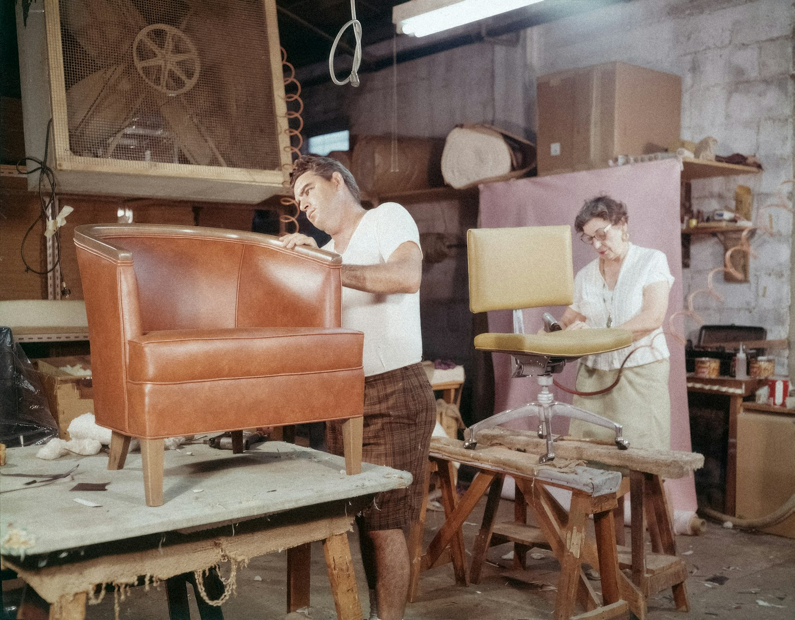

Upholstery · In-house workshop
Sofa repair and re-upholstery in Hyderabad.
The sofa you own can outlast the one you were about to buy. We collect it from your home, strip it down, rebuild what has gone soft, and bring it back in a fabric you chose yourself — all within ten working days.

What we do
Stripped, rebuilt, re-covered — under one roof.
We collect your sofa in a truck, strip it down, replace the springs if they've gone, restuff the cushions, re-cover it in a fabric you actually chose, and deliver it home in ten days — better than you remember it.
New pieces too — chenille, jacquard, linen, leatherette, indoor-outdoor performance. Sold by the metre, upholstered by the room. The cutting and stitching is done by our own tailors, the same in-house team that measures, stitches and installs everything else we sell. One team, one address.
- Chenille & jacquard
- Pure & blended linen
- Performance · pet-friendly
- Leatherette & vinyls
- Sofa re-upholstery
- Foam & spring refits

The process
How a re-upholstery job runs.
-
Pickup
We collect the sofa from your home by truck, at a time that suits you.
-
Strip
The old fabric comes off, and we can finally see the frame underneath.
-
Springs and foam
Springs that have gone are replaced, and the cushions are restuffed or refit with fresh foam.
-
Re-cover
The frame is re-covered in the fabric you chose from our range, cut and stitched by our own tailors.
-
Return
The finished sofa is delivered back to your home within ten working days.

Fabric
You choose the cloth. We do the rest.
Every re-upholstery job starts at the fabric wall. Bring a photo of the room, sit with the swatch books, and take your time — if you are not sure what suits the light or the children or the dog, the consultation is free. Fabric is sold by the metre, so you pay for what the sofa needs and nothing more.
The full range is on the collections page, or better — on the floor in Ameerpet, where you can touch it.


Price
What it costs.
TODO-CLIENT: price range
What we can tell you now: the quote depends on the size of the piece, the condition of the springs and foam, and the fabric you choose. The home visit and measurement are free, and you get a firm price before any work starts.
Questions
Asked across the counter, answered here.
Do you pick up the sofa from our home?
Yes. We collect the sofa from your home by truck, and bring it back when the work is done — return delivery is within ten working days.
Can we choose the fabric ourselves?
Yes. You choose from the range on our floor — chenille, jacquard, pure and blended linen, leatherette and indoor-outdoor performance fabrics — sold by the metre. If you are not sure what suits the room, the consultation is free.
Do you repair springs and foam, or only change the cover?
Both, as needed. We strip the old fabric, replace springs that have gone, restuff or refit the foam and cushions, and only then re-cover.
Is there a warranty on the work?
Warranty support runs through the shop — if something is wrong with the work, you call us, not a call centre.
Ready when you are
Book the truck.
Send a photo of the sofa on WhatsApp for a quick estimate, or call and we'll come measure it — the visit is free.